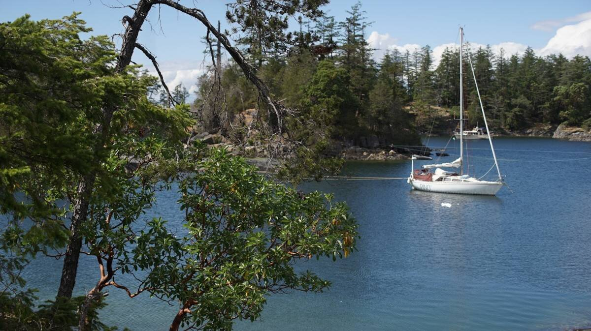
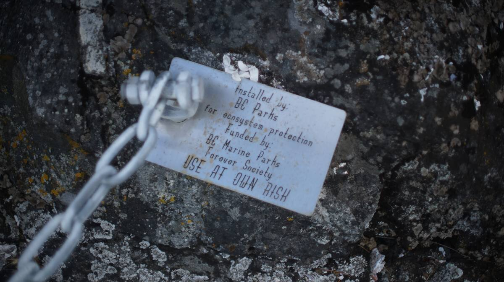
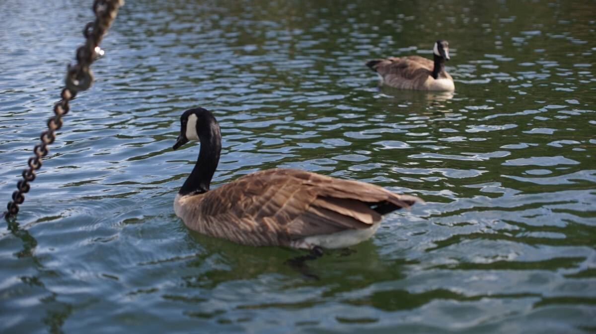
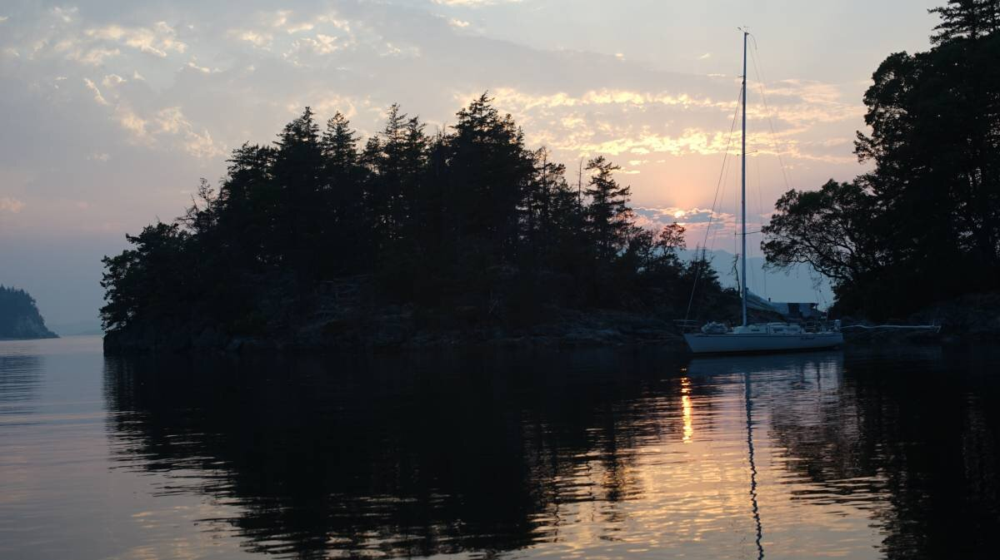
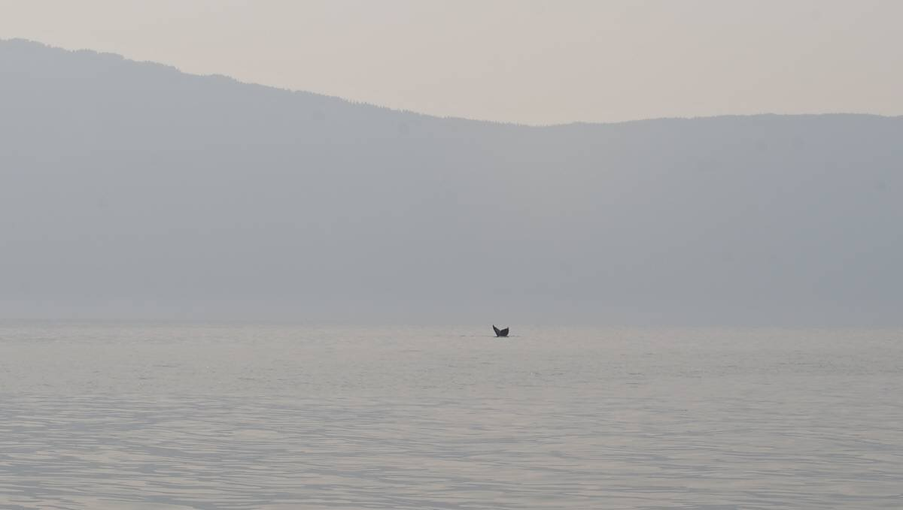
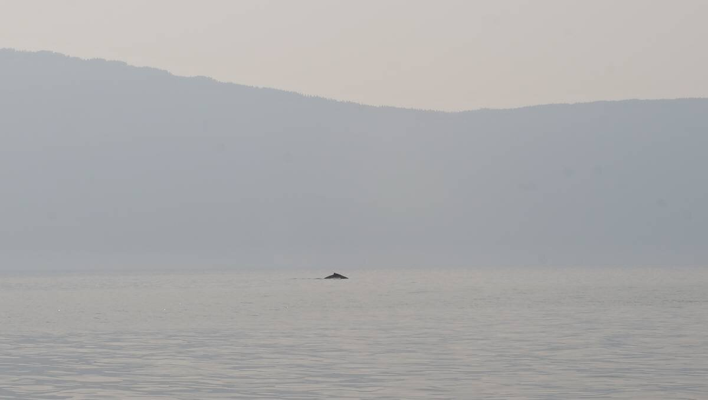

smuggler cove
Click below dates for more recent updates:
Note. What we refer to on this page as Smuggler's Cove, is on the traditional, stolen, unceded, overlapping and/or shared territory land of the Malahat, SC’IA⁄NEW, shíshálh swíya, Snaw-Naw-As First Nations, as well as the lək̓ʷəŋən, and T’Sou-ke nations.
At 5h30 in the morning on June 16th 2023, while in bed, we overheard the captain of our dock neighbor hailing the Winchelsea navy tracking station to ask if Whiskey Golf was active, and to our delight, we heard that no, it wasn't. Perfect. Our plan was to leave at 6h30, and to listen to the radio to find out.
When leaving from Silva Bay, having to take a detour around the active area is not the end of the world because it doesn't extend too far that way, it is more restrictive if leaving from Nanaimo. Either way, it meant that we could point directly to our destination.
What is Whiskey Golf? Whiskey Golf is a testing area for underwater vehicles, which includes surface and air-launched torpedoes. The area on charts is labelled as WG and covers much of the water north of Nanaimo, stretching all the way to the Ballenas Islands, and to part of Gabriola Island. Whether or not the area is active is announced on the weather channel(WX) daily. The area is monitored closely, if they see you passing on an active day, they will hail you and ask you to leave the area. It is possible to bypass it by going south, by a corridor along the Vancouver Island coast, winds permitting.
We pushed off, motored out of Silva Bay, raised the sails and took off. A bald eagle watched us as we left, perched on a rock on Rowboat Pt, NW of Gaviola Island. As soon as we cleared all of the small islands around Gabriola, the waves and wind started to build out of the SE, and Pino began to move at a rapid 7-8 knots. The wind was forecast to be 20 kts, and this wind stayed with us for the duration of our 25nm long crossing.
The sky was grey, and we got some rain(only a little). We thought it nice to have a break from the sun.
The waves can get quite big in this Strait, especially with a good SE wind blowing. The water is open all the way down to Bellingham WA, it has a long time to travel, and to build into something fearsome. The waves are big with not much time between swells, unlike ocean waves, which makes for a choppy, bumpy ride. Pino had a full main and jib, and was overall well-balanced, and still, the boat rolled with every wave. We had the wind on the starboard quarter. Our boat handles this well enough, but it makes doing anything inside a bit difficult. We managed to cook some oatmeal for breakfast, but decided to only have coffee at our destination.
We crossed paths with a humpback whale, it surfaced right near us, and we made a quick 90-degree turn to get out of its way. We saw another far away, its spray rising from the water. "A lot of whale traffic this morning," we thought.
We arrived at the mouth to Smuggler Cove fast, 3 1/2 hours later. We passed through Welcome Passage(between mainland and Thormanby Island), avoiding having to go round the west side of Thormanby. The waves died down at the south end, and we had a nice quiet sail, breaking our unfortunate streak of arriving anywhere new in boisterous conditions.
Smuggler Cove
The entrance to Smuggler Cove is a bit tricky, it is narrow (15m/50ft), and winding. It is a good idea to keep close to Capri Island to avoid some shoals. We arrived at low tide, to find the cove to be rather tight. All of that exposed land made the place feel restricted, and unfriendly. The tides are bigger than in the Gulf Islands here, with a 4-5 m (16 ft) difference. At low tide, a lot of land becomes exposed and turn into high cliffs.
Smuggler cove has 3 basins for anchoring. We saw 4 boats anchored and stern-tied in the north basin, and only one in the middle basin. We decided to drop anchor in there, avoiding the south basin entirely because of its overall depth. Depths throughout Smuggler Cove are 2-4 m (5-13 ft), in sticky mud (aside from the south bay that appears to be shingle).
If anchoring in the middle basin, watch for a shoal in the very center.
We found a spot that permitted us to anchor with the bow in the SE, with the wind forecast that day. Some boats sometimes don't get to pick where they want to go because the anchorage is full, and they get the wind beam on... making stern-tying a very difficult affair, especially if there are other boats around to avoid. No one likes playing bumper boats. All boats stern-tie in Smuggler Cove, swinging restricts the anchorage too much.
We put the dinghy in the water quickly, dropped the anchor in 1.5 m (5 ft) of water in mud (yes, very shallow at low tide), and backed towards the shore, letting out enough rode (49°30.851N, 123°57.881W). Then, Rek leapt into the dinghy, grabbed the end of the floating line and rowed to shore.
The anchorage provides stern-tie rings, long lengths of chain bolted into rock, to spare the trees. Thankfully, in this area, it is easy to get to the rings, even at low tide, and even if it requires climbing over barnacle and slippery algae-covered rocks.
High tide was at 19h00 that day, we had 5.20 m (17 ft) under us.
When the water is high, the bay takes on a friendlier, more welcoming appearance. Low areas between islands become covered with water, and are divided into many smaller islands. At high tide, if we look past our stern, we see Texada Island (see above photo). Because the bay fills out, we get a bit less protection in this particular spot from a NW wind. We had such a night, with 15-20 kts winds out of the NW, rain and lightning in the sky. Pino relied almost entirely on the stern line, but it held us in place. The next day, we checked the rope for chafe and found no damage.
A regatta of geese came by to see us, to see if we had set our anchor right. They didn't look impressed.
Being stern-tied makes solar cooking a bit easier, we don't need to adjust the solar cooker as often. On our first day here, we solar cooked some seitan.
The anchorage is surrounded by walking trails. Our anchoring spot is right near such a trail, and everyday we see people sitting on the rocks nearby. When the tide is low, sometimes people come on the little island we are stern-tied to. The main trail leads to a parking lot near the highway, and goes through beautiful wetlands.
This place is really popular, we realized, the trails are constantly full of people.
We anchored here again on the way south to wait for good weather to cross the Strait of Georgia.
This time we anchored in the outerbasin, near the entrance. We saw a pair of orcas swimming right by the opening one time. While coming to this anchorage we also encountered many humpback whales in Malaspina Strait.
 Unstable weather systems, bringing lightning and strong squalls, came through the area on two separate nights, causing many boats stern-tied to shore to drag anchor. Smuggler's Cove isn't as sheltered as it looks, and when stern-tied it is impossible for the boat to take winds from all directions well.
We angled our bow towards the SE when stern-tying, and it helped in strong winds from that direction, but others weren't positioned as well and the wind hit them on the beam.
The second night of unstable weather brought even more chaos because a squall caused the wind to hit boats stern-tied to the north wall on the beam, the wind was funnelling in from the entrance. We were amongst the boats tied to that wall. Pino did not drag, but 2 of our neighbors did.
Devine got stung by a wasp for the third time this summer. Their right hand swelled up and stayed that way for many days.